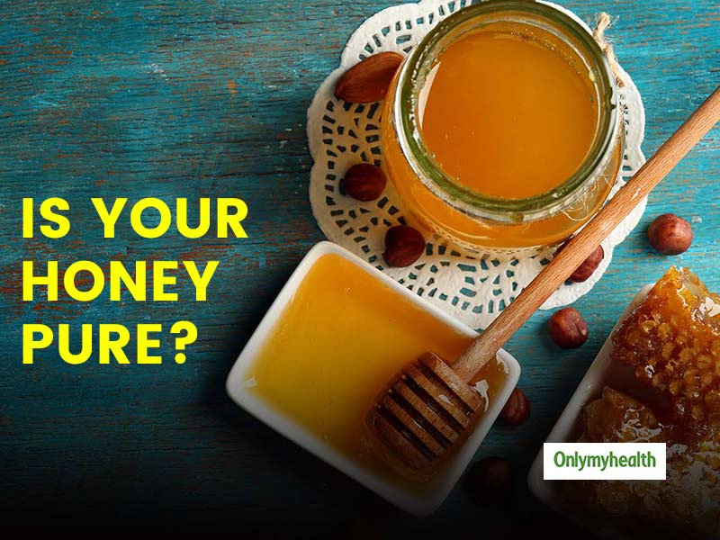

Hi, I'm Karthigai lakshmi
Aspiring Web developer
About me
I'm Karthigai Lakshmi, an engineering student with a passion for technology and innovation.
Aspiring Web Developer passionate about technology and innovation, with a drive for excellence.
Dedicated to learning and creating impactful solutions in the tech industry.Dedicated, competitive,
and always eager to help, I strive to excel in all endeavors. My goal is to secure a
rewarding
position at a reputable organization where I can contribute and grow.

Skills
HTML
CSS
Data Science
Machine Learning
C
Projects

Honey Purity Prediction
Developed a machine learning model to accurately predict honey purity, ensuring quality control and authenticity. Utilized advanced algorithms and feature selection techniques to achieve high accuracy in distinguishing pure from adulterated honey.